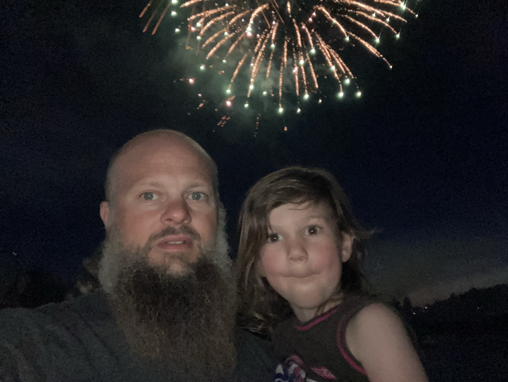

Fireworks on the fourth


We went to see a fireworks show which was simple and for its type, well done. However, as I take my family to observe the fireworks in the present, it makes me wonder how many Americans really connect the 4th of July celebration to the events and social context of over 200 years ago. That is, do they associate the fireworks with the rocket’s red glare, with the bloody cost and toll of human suffering? How many know and understand the story of our country’s origin–all of it–not just the “freedom from England” part? I noticed people of different ethnic origins enjoying the fireworks. People speaking different languages. People with different social values and personal itineraries. It made me wonder do people understand this country–really, especially first and second generation nationals. Can people in Junior High really articulate the story of this country and what would they say. Or is this festival of fireworks understood through the lens of understanding fireworks and their social context as experienced in other parts of the world, e.g., East Asia and Latin America? It occurs to me that unless the oral history of our country’s origin is repeated that the origin story can’t be heard by the next generation regardless of their origin. How is that history supposed to be passed down by playing the 1812 overture–a masterpiece of music–but one that celebrates France’s defeat at the hands of the Russians? And while the 4th of July seems to celebrate the freedom from the British Royal Crown, is it in some way the consummation of a continuing policy against the peoples who lived in, on, upon, and from the land? And if this is the land of the free, home of the brave what freedom was being granted in the same breath that freedom was being claimed. At some level I still believe in the Constitution, especially when I say we need some additional amendments and to clarify some points via an act of Congress. However, is the foundation of that Federal organization morally valid–either as secessionists or oppressors?
As I think back to my childhood, the history of our country’s origin was not hid from me. It was specifically narrated through events, monuments, and military history. I wonder how should or can I narrate that for my kids. Frankly, the challenge is that if I don’t valorize one side of the story, then it looses its novelty. And yet, sometimes I wonder if the colonialists should have rather marched on London to overthrow the king! How different would our world be today, India, Australia, Canada, South Africa, and even the Middle East?
Categories:
Katja Patersonová
Musician
I speak English and French. I have played violin since January 2023, and piano since June 2024. My favorite swim strokes are Butterfly and freestyle, but I also manage with backstroke.